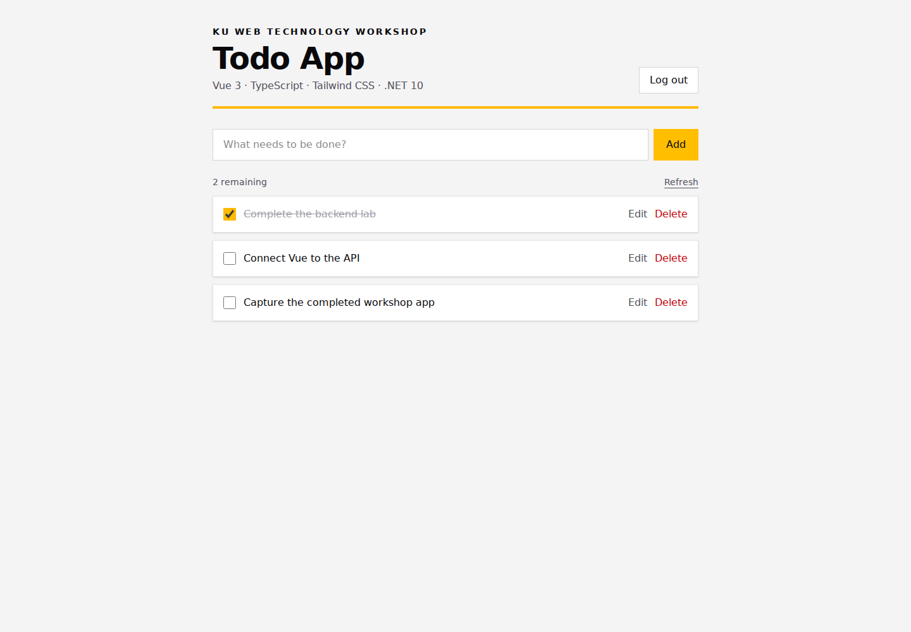

Learning outcomes
By the end of this lab you should be able to:
- Create a Vue 3 project with TypeScript and Vite.
- Build a responsive interface with Tailwind CSS utility classes.
- Represent API request and response shapes with TypeScript interfaces.
- Call an ASP.NET Core API with Axios.
- Attach a JWT Bearer token to protected API requests.
- Explain why CORS is required when frontend and backend use different origins.
- Perform create, read, update, and delete operations from the browser.
Frontend foundations: start here
Read this tutorial before Step 0. Allow about 60–90 minutes, including discussion. No project installation is needed to read the examples. You can try the standalone Vue examples in the Vue Playground, or revisit them after Step 2. Examples are independent learning exercises; do not paste all of them into the final App.vue.
What should you already know?
- HTML: headings, lists, labels, inputs, buttons and forms.
- CSS: selectors, margin versus padding, the box model, flexbox and responsive widths.
- JavaScript: const/let, objects, arrays, functions, imports/exports, map/filter, promises and async/await.
- Web APIs: HTTP methods, status codes and JSON from the backend lab.
If these are new, review the MDN web development learning materials first. You do not need prior Vue experience.
What each tool does
| Tool | Responsibility in our Todo app |
|---|---|
| Vue | Renders components and updates the UI when reactive data changes. |
| TypeScript | Checks the shapes of values and function calls during development. |
| Tailwind CSS | Provides small styling classes for layout, spacing, color and responsive states. |
| Vite / npm | Vite serves and bundles the frontend; npm installs packages and runs project scripts. |
| Axios | Sends HTTP requests to our .NET API. |
Learning priorities
| Priority | Concepts | Use in this lab |
|---|---|---|
| Understand before coding | Types, components, ref/computed, directives, events, CSS utilities, async requests | Used directly in Steps 3–7. |
| Understand the pattern | Props/emits and composables | Practice below; useful when splitting the final App.vue. |
| Know when to add | Routing, Pinia and TanStack Query | Concept previews; optional follow-up work after CRUD succeeds. |
1. TypeScript basics
TypeScript adds a type checker to JavaScript. A type describes which values are allowed. The browser runs the JavaScript produced by the build tools; type annotations are removed. Types help catch mistakes before execution, but do not validate incoming JSON at runtime.
Read this independent example in the TypeScript Playground:
interface Todo {
id: number
title: string
isCompleted: boolean
note?: string
}
type Filter = 'all' | 'active' | 'completed'
const title = 'Learn Vue' // inferred as a string value
let filter: Filter = 'active'
const todos: Todo[] = [
{ id: 1, title, isCompleted: false },
]
function remaining(items: Todo[]): number {
return items.filter(item => !item.isCompleted).length
}
const selected: Todo | undefined = todos.find(item => item.id === 2)
console.log(selected?.title ?? 'No selection')
console.log(remaining(todos))
number, string and
boolean are primitive types; Todo[] is an
array. An interface names an object shape. A union such as
Todo | undefined permits either value. The optional
note? may be absent; ?. safely accesses a
possibly missing value and ?? supplies a fallback.
Functions can declare parameter and return types. An asynchronous
function returning Todos has type
Promise<Todo[]>. await waits for
that result inside an async function. Use
import type { Todo } for type-only imports. Prefer
unknown over any for unexpected errors,
then narrow with error instanceof Error before
accessing its message.
Reference: TypeScript everyday types.
2. Vue components and reactive state
A component is a reusable part of a page, such as a Todo row or
login form. A Single-File Component (.vue) places logic
in <script setup lang="ts">, markup in
<template>, and optional CSS in
<style scoped>. This workshop uses the
Composition API.
Vue tracks reactive values and updates the rendered page. Try this complete component as App.vue in the Vue Playground:
<script setup lang="ts">
import { computed, ref } from 'vue'
const title = ref('')
const savedTitles = ref<string[]>([])
const count = computed(() => savedTitles.value.length)
function add(): void {
const value = title.value.trim()
if (!value) return
savedTitles.value.push(value)
title.value = ''
}
</script>
<template>
<form @submit.prevent="add">
<label for="title">Todo title</label>
<input id="title" v-model="title" />
<button :disabled="!title.trim()">Add</button>
</form>
<p>{{ count }} saved</p>
<p v-if="count === 0">Add your first Todo.</p>
<ul v-else>
<li v-for="(item, index) in savedTitles" :key="index">{{ item }}</li>
</ul>
</template>
ref holds a reactive value; use .value in
script. Top-level refs are unwrapped in the template.
computed derives a value from other state, so you do
not manually keep the count in sync. A plain variable is not a
reactive replacement for ref.
| Syntax | Meaning |
|---|---|
| {{ title }} | Display a value as text. |
| :disabled | Bind an HTML attribute/property to an expression; shorthand for v-bind. |
| v-model | Keep an input and a state value synchronized. |
| v-if / v-else | Render a branch conditionally. |
| v-for and :key | Render a list and identify each item. Use todo.id in the API lab; an index is acceptable only for this append-only demonstration. |
| onMounted | Register work after the component mounts, such as loading initial data. |
| watch | Run a side effect when a value changes; use computed for derived values instead. |
Reference: Vue introduction.
3. Events, props and emit
A DOM event comes from the browser:
@click="handleDelete" handles a click and
@change handles a changed input. @ is
shorthand for v-on. The .prevent modifier
in @submit.prevent prevents a form's normal page
navigation.
Components communicate through an explicit contract: a parent supplies props; a child emits an event when something happens. The parent owns the data and decides how to change it. Component events do not automatically bubble through every ancestor.
Practice in the Vue Playground: add a file called
TodoRow.vue:
<script setup lang="ts">
defineProps<{ title: string; completed: boolean }>()
const emit = defineEmits<{ toggle: [] }>()
</script>
<template>
<button type="button" :aria-pressed="completed" @click="emit('toggle')">
{{ completed ? 'Done: ' : 'Open: ' }}{{ title }}
</button>
</template>Replace the playground's App.vue with the parent:
<script setup lang="ts">
import { ref } from 'vue'
import TodoRow from './TodoRow.vue'
const completed = ref(false)
function toggle(): void {
completed.value = !completed.value
}
</script>
<template>
<TodoRow title="Learn component events"
:completed="completed" @toggle="toggle" />
</template>
defineProps and defineEmits are compiler
macros in script setup, so they need no import. Props are read-only
inputs; the child requests a change instead of assigning to a prop.
An event may also carry data:
defineEmits<{ rename: [title: string] }>()
describes a typed title payload.
Reference: Vue component events.
4. Tailwind CSS basics
Tailwind is a CSS framework built around utility classes. Combine classes on HTML elements to express styles. Vue controls behavior; Tailwind controls presentation. CSS concepts still matter.
After Step 3 installs Tailwind, try this markup inside a Vue template:
<section class="mx-auto max-w-xl space-y-4 rounded-lg bg-white p-6 shadow-sm">
<h2 class="text-2xl font-bold text-zinc-950">My Todos</h2>
<div class="flex flex-col gap-3 sm:flex-row">
<label class="flex-1">
<span class="block text-sm">Title</span>
<input class="w-full border border-zinc-300 px-3 py-2" />
</label>
<button type="button"
class="rounded bg-blue-700 px-4 py-2 text-white hover:bg-blue-800 focus-visible:outline-2 focus-visible:outline-offset-2">
Add
</button>
</div>
</section>| Class group | Purpose |
|---|---|
| p-6, px-4, py-2, gap-3 | Padding and gaps using the spacing scale. |
| mx-auto, max-w-xl, w-full | Center a constrained container and size its children. |
| flex, flex-col, sm:flex-row | Stack by default; switch to a row at the sm breakpoint and above. |
| text-2xl, font-bold, text-white | Font size, weight and color. |
| hover:bg-blue-800, focus-visible:outline-2 | Styles for pointer hover and keyboard focus. |
Responsive prefixes are mobile-first: sm: does not mean
“only small phones.” Keep complete class names in source code so
Tailwind can discover them; use
:class="completed ? 'text-green-700' : 'text-zinc-900'"
rather than constructing partial color class names.
Reference: Tailwind utility classes.
5. Queries, mutations and async UI
A query reads server data, such as GET /api/todos.
A mutation changes it through POST, PUT or DELETE.
Here “query” means fetching API data, not a SQL statement. A URL
query string such as ?page=2 is a separate concept; the
current Todo API does not implement pagination.
Axios handles HTTP transport. Your UI must still represent loading, success, an empty result and failure. This pattern previews Step 7; its imports exist after Steps 5–6:
import { ref } from 'vue'
import { getTodos } from '@/services/api'
import type { Todo } from '@/types/todo'
const todos = ref<Todo[]>([])
const isLoading = ref(false)
const errorMessage = ref('')
async function loadTodos(): Promise<void> {
isLoading.value = true
errorMessage.value = ''
try {
todos.value = await getTodos()
} catch (error: unknown) {
errorMessage.value = error instanceof Error
? error.message : 'Could not load Todos'
} finally {
isLoading.value = false
}
}After a mutation succeeds, either update local state using the response or fetch the list again. Do not display success before the server confirms it. In Step 7, creation adds the returned Todo and deletion removes it after the request succeeds.
When to add TanStack Query
TanStack Vue Query manages server-state caching and request lifecycle. A query key identifies cached data, a query function fetches it, and mutation success can invalidate a related query so active views refresh. It complements an HTTP client such as Axios. It is optional in this lab: first understand the manual loading/error pattern. Cached server data is not automatically durable storage or always fresh.
Reference: TanStack Vue Query overview.
6. Composables: reuse reactive logic
A composable is a function that packages reusable stateful Vue
logic, conventionally named useSomething. An API
service sends requests; a composable can coordinate those requests
with reactive loading, errors and data. A component renders the
results.
For an independent playground exercise, create
useTodoDraft.ts:
import { computed, ref } from 'vue'
export function useTodoDraft() {
const title = ref('')
const canSubmit = computed(() => title.value.trim().length > 0)
function reset(): void {
title.value = ''
}
return { title, canSubmit, reset }
}Use it from App.vue:
<script setup lang="ts">
import { useTodoDraft } from './useTodoDraft'
const { title, canSubmit, reset } = useTodoDraft()
</script>
<template>
<label>Draft title <input v-model="title" /></label>
<button type="button" :disabled="!canSubmit" @click="reset">Clear</button>
</template>Call composables synchronously in script setup, especially when they register lifecycle hooks. Refs created inside this function are new for every call: sharing logic does not mean sharing one global state. A plain formatter without reactive state can remain an ordinary utility function.
Reference: Vue composables.
7. State management: where should data live?
State is data that changes while the application runs. Start with the smallest owner that needs it. A form draft belongs to the form. Sibling components can receive data from their shared parent. A larger app can use Pinia for shared client state.
| State | Owner/tool | Example |
|---|---|---|
| Local UI | Component ref | New Todo title or an open dialog. |
| Derived value | computed | Remaining Todo count. |
| Shared client state | Pinia when needed | A filter used by multiple views. |
| Server state | API plus local state or a query cache | Todos persisted by SQLite. |
A Pinia setup store exposes state (refs), getters (computed values),
and actions (functions). This optional preview requires
npm install pinia and
app.use(createPinia()) before mounting the Vue app; it
is not required for the one-screen lab:
import { ref } from 'vue'
import { defineStore } from 'pinia'
export const useFilterStore = defineStore('todoFilter', () => {
const filter = ref<'all' | 'active'>('all')
function showActive(): void {
filter.value = 'active'
}
return { filter, showActive }
})
Inside a component, call
const filters = useFilterStore(), read
filters.filter, and call
filters.showActive(). If destructuring reactive store
state, use storeToRefs. Pinia does not automatically
persist data after a reload, and storing a login flag does not grant
API access.
Reference: Pinia store concepts.
8. Routing: connect URLs to views
A single-page application can show different views without reloading
the entire document. Vue Router maps browser paths such as
/login and /todos to Vue components. These
frontend routes are distinct from backend API routes such as
/api/todos.
Optional preview for after the lab: install vue-router,
create LoginView.vue and TodosView.vue in src/views,
and configure src/router.ts:
import { createRouter, createWebHistory } from 'vue-router'
import LoginView from './views/LoginView.vue'
import TodosView from './views/TodosView.vue'
export const router = createRouter({
history: createWebHistory(),
routes: [
{ path: '/', redirect: '/todos' },
{ path: '/login', component: LoginView },
{ path: '/todos', component: TodosView },
],
})
Import router in main.ts and register it with
app.use(router) before app.mount('#app').
In App.vue, render navigation and the matched view:
<template>
<nav>
<RouterLink to="/login">Login</RouterLink>
<RouterLink to="/todos">Todos</RouterLink>
</nav>
<RouterView />
</template>
A dynamic path such as /todos/:id supplies a route
parameter; URL parameters arrive as strings and need parsing before
numeric use. A navigation guard may redirect a signed-out user, but
the backend must still authorize requests. History-mode hosting must
return the SPA entry document for frontend routes on direct visits;
the current GitHub Pages site hosts lab documents, not this running
API application.
Reference: Vue Router getting started.
9. Readiness check and next steps
Before starting the project, explain these in your own words. Open the answer guide after trying.
- Which tool handles rendering, type checking, styling and HTTP?
- Why does changing a ref update the screen? Where is .value needed?
- How do props, a DOM click and a component emit differ?
- Why should remainingCount be computed?
- What happens to loading if an API request fails?
- When would you introduce a composable, Pinia, Router or a query cache?
Answer guide
Vue renders; TypeScript checks; Tailwind styles; Axios sends HTTP. Vue tracks reactive dependencies; use .value in script for refs. Props carry parent inputs, a DOM click is a browser event, and emit notifies a component listener. computed keeps a derived count synchronized. finally clears loading even after an error. Composables reuse reactive logic, Pinia shares client state, Router maps URLs to views, and a query cache coordinates server data and refreshing.
Connect the foundations to the coding lab
Continue with Step 0: tools. You will revisit Tailwind in Step 3, types in Step 5, queries in Step 6, and reactivity/events in Step 7. After CRUD works, split TodoRow with props/emits, extract useTodos, then experiment with Router and Pinia. Add query caching when you understand how a successful mutation updates the list.
Understand the integration flow
Vue component
│ calls a typed function
▼
Axios API client
│ adds Authorization: Bearer <token>
│ sends HTTP + JSON
▼
.NET 10 Minimal API ──► EF Core ──► SQLite
│
└── returns status code + JSON
│
▼
Vue updates reactive state
During development, Vite serves Vue at
http://localhost:5173 and ASP.NET Core serves the API
at http://localhost:5000. These are different
origins because their ports differ, so the backend
must explicitly allow the Vue origin with CORS.
Prepare the frontend tools
Install required tools
- Node.js — official download (use a current LTS release supported by Vue)
- Visual Studio Code — Microsoft
- Vue - Official extension
- Optional: Tailwind CSS IntelliSense
Verify Node.js and npm
node --version
npm --versionPrepare the backend for Vue
Use a predictable development URL
Open a terminal in TodoApi and run:
dotnet run --urls http://localhost:5000
Keep this terminal running. The frontend will use
http://localhost:5000 as its API base URL.
Allow the Vue development origin with CORS
In Program.cs, add this service registration
before builder.Build():
builder.Services.AddCors(options =>
{
options.AddPolicy("VueClient", policy =>
{
policy
.WithOrigins("http://localhost:5173")
.AllowAnyHeader()
.AllowAnyMethod();
});
});
Add the middleware after var app = builder.Build(); and
before authentication/authorization:
app.UseCors("VueClient");
app.UseAuthentication();
app.UseAuthorization();CORS means Cross-Origin Resource Sharing. Browsers block JavaScript from reading a response from another origin unless that server permits it. This policy permits only the local Vue development origin.
http://localhost:5000 and
allows http://localhost:5173.
Create the Vue + TypeScript project
Open a second terminal in the parent
todo-workshop folder, beside TodoApi:
npm create vue@latest| Prompt | Choice | Reason |
|---|---|---|
| Project name | todo-web |
Creates the frontend folder. |
| Add TypeScript? | Yes | Adds static type checking. |
| Add JSX? | No | Vue templates are enough. |
| Add Vue Router? | No | The lab uses one screen. |
| Add Pinia? | No | Local reactive state is enough. |
| Add Vitest / E2E? | No | Testing can follow in another lab. |
| Add ESLint? | No | Keeps the beginner setup focused; add linting after the lab. |
| Add Prettier? | No | Keeps the first setup minimal. |
cd todo-web
npm install
code .
npm run dev
Open http://localhost:5173. Stop the server with
Ctrl + C before installing packages.
Add Tailwind CSS
npm install tailwindcss @tailwindcss/viteReplace vite.config.ts with:
import { fileURLToPath, URL } from 'node:url'
import { defineConfig } from 'vite'
import vue from '@vitejs/plugin-vue'
import tailwindcss from '@tailwindcss/vite'
export default defineConfig({
plugins: [vue(), tailwindcss()],
resolve: {
alias: {
'@': fileURLToPath(new URL('./src', import.meta.url)),
},
},
})Replace src/assets/main.css with:
@import "tailwindcss";
body {
min-width: 320px;
min-height: 100vh;
background: #f4f4f5;
}
Confirm src/main.ts still contains
import './assets/main.css'.
tailwind.config.js.
Install Axios and configure the API URL
npm install axiosCreate .env.development in the project root:
VITE_API_BASE_URL=http://localhost:5000
Vite exposes client variables whose names start with
VITE_. TypeScript reads this value as
import.meta.env.VITE_API_BASE_URL.
VITE_ variable.
Create TypeScript models
Create src/types/todo.ts:
export interface Todo {
id: number
title: string
isCompleted: boolean
}
export interface CreateTodoRequest {
title: string
}
export interface UpdateTodoRequest {
title: string
isCompleted: boolean
}
export interface LoginRequest {
username: string
password: string
}
export interface LoginResponse {
accessToken: string
}
These interfaces match the backend DTO contracts. ASP.NET Core
serializes property names as camel case by default, so C#
IsCompleted becomes JSON isCompleted.
Create the Axios API client
Create src/services/api.ts:
import axios from 'axios'
import type {
CreateTodoRequest,
LoginRequest,
LoginResponse,
Todo,
UpdateTodoRequest,
} from '@/types/todo'
const api = axios.create({
baseURL: import.meta.env.VITE_API_BASE_URL,
headers: { 'Content-Type': 'application/json' },
})
api.interceptors.request.use((config) => {
const token = localStorage.getItem('accessToken')
if (token) config.headers.Authorization = `Bearer ${token}`
return config
})
export async function login(request: LoginRequest): Promise<void> {
const response = await api.post<LoginResponse>('/api/auth/login', request)
localStorage.setItem('accessToken', response.data.accessToken)
}
export function logout(): void {
localStorage.removeItem('accessToken')
}
export function hasToken(): boolean {
return localStorage.getItem('accessToken') !== null
}
export async function getTodos(): Promise<Todo[]> {
const response = await api.get<Todo[]>('/api/todos')
return response.data
}
export async function createTodo(request: CreateTodoRequest): Promise<Todo> {
const response = await api.post<Todo>('/api/todos', request)
return response.data
}
export async function updateTodo(
id: number,
request: UpdateTodoRequest,
): Promise<Todo> {
const response = await api.put<Todo>(`/api/todos/${id}`, request)
return response.data
}
export async function deleteTodo(id: number): Promise<void> {
await api.delete(`/api/todos/${id}`)
}How authentication is integrated
- Login returns
accessToken. -
The client stores it in
localStoragefor this workshop. - The interceptor runs before every Axios request.
- It adds
Authorization: Bearer <token>. - The API validates the token before running protected Todo endpoints.
Build the login and Todo UI
Replace src/App.vue with:
<script setup lang="ts">
import { computed, onMounted, ref } from 'vue'
import {
createTodo, deleteTodo, getTodos, hasToken,
login, logout, updateTodo,
} from '@/services/api'
import type { Todo } from '@/types/todo'
const todos = ref<Todo[]>([])
const username = ref('student')
const password = ref('password')
const newTitle = ref('')
const isAuthenticated = ref(hasToken())
const isLoading = ref(false)
const errorMessage = ref('')
const remainingCount = computed(
() => todos.value.filter((todo) => !todo.isCompleted).length,
)
function showError(error: unknown): void {
console.error(error)
errorMessage.value = 'Request failed. Check that the API is running and try again.'
}
async function loadTodos(): Promise<void> {
isLoading.value = true
errorMessage.value = ''
try {
todos.value = await getTodos()
} catch (error) {
showError(error)
} finally {
isLoading.value = false
}
}
async function handleLogin(): Promise<void> {
isLoading.value = true
errorMessage.value = ''
try {
await login({ username: username.value, password: password.value })
isAuthenticated.value = true
await loadTodos()
} catch (error) {
showError(error)
} finally {
isLoading.value = false
}
}
async function handleCreate(): Promise<void> {
const title = newTitle.value.trim()
if (!title) return
try {
todos.value.push(await createTodo({ title }))
newTitle.value = ''
} catch (error) {
showError(error)
}
}
async function handleToggle(todo: Todo): Promise<void> {
try {
const updated = await updateTodo(todo.id, {
title: todo.title,
isCompleted: !todo.isCompleted,
})
Object.assign(todo, updated)
} catch (error) {
showError(error)
}
}
async function handleRename(todo: Todo): Promise<void> {
const title = window.prompt('Rename Todo', todo.title)?.trim()
if (!title || title === todo.title) return
try {
const updated = await updateTodo(todo.id, {
title,
isCompleted: todo.isCompleted,
})
Object.assign(todo, updated)
} catch (error) {
showError(error)
}
}
async function handleDelete(todo: Todo): Promise<void> {
if (!window.confirm(`Delete "${todo.title}"?`)) return
try {
await deleteTodo(todo.id)
todos.value = todos.value.filter((item) => item.id !== todo.id)
} catch (error) {
showError(error)
}
}
function handleLogout(): void {
logout()
todos.value = []
isAuthenticated.value = false
}
onMounted(() => {
if (isAuthenticated.value) void loadTodos()
})
</script>
<template>
<main class="min-h-screen px-4 py-10 text-zinc-950">
<section class="mx-auto max-w-2xl">
<header class="mb-8 border-b-4 border-amber-400 pb-5">
<p class="mb-2 text-sm font-bold uppercase tracking-widest">
KU Web Technology Workshop
</p>
<div class="flex items-end justify-between gap-4">
<div>
<h1 class="text-4xl font-black tracking-tight sm:text-5xl">Todo App</h1>
<p class="mt-2 text-zinc-600">Vue 3 · TypeScript · Tailwind CSS · .NET 10</p>
</div>
<button v-if="isAuthenticated" class="border border-zinc-300 bg-white px-4 py-2 font-semibold hover:bg-zinc-100" type="button" @click="handleLogout">
Log out
</button>
</div>
</header>
<p v-if="errorMessage" class="mb-5 border-l-4 border-red-600 bg-red-50 p-4 text-red-800" role="alert">
{{ errorMessage }}
</p>
<form v-if="!isAuthenticated" class="border border-zinc-200 bg-white p-6 shadow-sm" @submit.prevent="handleLogin">
<h2 class="mb-5 text-2xl font-bold">Sign in</h2>
<label class="mb-4 block">
<span class="mb-1 block font-semibold">Username</span>
<input v-model="username" class="w-full border border-zinc-300 px-3 py-2 outline-none focus:border-zinc-950" autocomplete="username" required />
</label>
<label class="mb-5 block">
<span class="mb-1 block font-semibold">Password</span>
<input v-model="password" class="w-full border border-zinc-300 px-3 py-2 outline-none focus:border-zinc-950" type="password" autocomplete="current-password" required />
</label>
<button class="w-full bg-zinc-950 px-4 py-3 font-bold text-white hover:bg-zinc-800 disabled:opacity-50" type="submit" :disabled="isLoading">
{{ isLoading ? 'Signing in…' : 'Sign in' }}
</button>
<p class="mt-4 text-sm text-zinc-500">Workshop account: student / password</p>
</form>
<section v-else>
<form class="mb-6 flex gap-2" @submit.prevent="handleCreate">
<input v-model="newTitle" class="min-w-0 flex-1 border border-zinc-300 bg-white px-4 py-3 outline-none focus:border-zinc-950" placeholder="What needs to be done?" aria-label="New Todo title" />
<button class="bg-amber-400 px-5 py-3 font-bold hover:bg-amber-300" type="submit">Add</button>
</form>
<div class="mb-3 flex items-center justify-between text-sm text-zinc-600">
<span>{{ remainingCount }} remaining</span>
<button type="button" class="font-semibold underline" @click="loadTodos">Refresh</button>
</div>
<p v-if="isLoading" class="border border-zinc-200 bg-white p-5">Loading…</p>
<p v-else-if="todos.length === 0" class="border border-dashed border-zinc-300 p-8 text-center text-zinc-500">
No Todos yet. Add your first one above.
</p>
<ul v-else class="space-y-3">
<li v-for="todo in todos" :key="todo.id" class="flex items-center gap-3 border border-zinc-200 bg-white p-4 shadow-sm">
<input class="size-5 accent-amber-400" type="checkbox" :checked="todo.isCompleted" :aria-label="`Mark ${todo.title} completed`" @change="handleToggle(todo)" />
<span class="min-w-0 flex-1 break-words" :class="todo.isCompleted ? 'text-zinc-400 line-through' : ''">{{ todo.title }}</span>
<button class="font-semibold text-zinc-600 hover:text-zinc-950" type="button" @click="handleRename(todo)">Edit</button>
<button class="font-semibold text-red-700 hover:text-red-900" type="button" @click="handleDelete(todo)">Delete</button>
</li>
</ul>
</section>
</section>
</main>
</template>Vue concepts used
| Concept | Purpose |
|---|---|
ref |
Reactive Todos, form values, loading, and errors. |
computed |
Derives the remaining count. |
onMounted |
Loads Todos after a signed-in user refreshes. |
v-model |
Synchronizes inputs with reactive values. |
v-if |
Switches between login and Todo screens. |
v-for |
Renders each Todo. |
@submit / @click |
Handles user actions. |
Run the full stack
You need two terminal sessions:
Terminal 1 — Backend
cd TodoApi
dotnet run --urls http://localhost:5000Terminal 2 — Frontend
cd todo-web
npm run devOpen http://localhost:5173 and sign in with:
Username: student
Password: passwordVerify the complete CRUD workflow
| Action | Request | Expected result |
|---|---|---|
| Sign in | POST /api/auth/login |
Todo screen appears. |
| Load | GET /api/todos |
Existing Todos appear. |
| Add | POST /api/todos |
New Todo appears. |
| Complete | PUT /api/todos/{id} |
Todo becomes checked. |
| Rename | PUT /api/todos/{id} |
New title appears. |
| Delete | DELETE /api/todos/{id} |
Todo disappears. |
| Log out | No API call | Token is removed. |
Inspect requests in the browser
- Open Developer Tools and select Network.
- Create or update a Todo.
- Inspect its method, URL, status, request payload, and response.
-
Under Request Headers, find
Authorization: Bearer ....
Run and capture the completed project
The repository includes a finished version of the code from both labs:
backend/TodoApi/ .NET 10 API
frontend/ Vue 3 application
scripts/ Run and capture automationFrom the repository root, install dependencies and start both applications:
npm install
npm run setup
npm run dev
Open the frontend at http://localhost:5173. The API
reference is available at
http://localhost:5000/scalar/v1.
Generate the screenshot
npm run setup:capture
npm run capture
Install Chromium once with setup:capture. Future
captures only need npm run capture.
Playwright starts Chromium, signs in, creates a Todo, and saves the following image automatically:

Security notes for after the workshop
The lab uses localStorage so the Bearer-token flow is
easy to inspect. JavaScript can read local storage, so an XSS
vulnerability could expose that token. Production authentication
needs a deliberate design—often short-lived access tokens and
secure, HttpOnly, Secure, appropriately
configured cookies for refresh or session material.
- Never put the JWT signing key in the Vue project.
- Use HTTPS outside local development.
- Validate and authorize every protected operation on the server.
- Do not treat a hidden button as authorization.
- Use a real identity store and hashed passwords.
Troubleshooting
npm command not found
Install Node.js, reopen the terminal, then run the version commands again.
Browser reports a CORS error
Confirm Vue is at http://localhost:5173, the API has
the CORS policy, and the backend was restarted.
Axios reports Network Error
Confirm the API is at http://localhost:5000. Restart
npm run dev after changing an environment file.
Todo request returns 401
Sign in again. Inspect local storage for
accessToken and the Network request for its
Authorization header.
@/ import cannot be resolved
Keep the alias in vite.config.ts. The official Vue
TypeScript template configures the matching TypeScript path.
Tailwind classes have no effect
Confirm the Vite plugin, CSS import, and
src/main.ts stylesheet import, then restart Vite.
Vite uses another port
Stop other Vite processes or add the actual origin to the API CORS policy. The origins must match exactly.
Final checkpoint
- The Vue project passes TypeScript checking and builds.
- Tailwind CSS styles the page responsively.
- The backend allows the intended Vue development origin.
- Login returns a token and the client stores it.
- Axios sends the Bearer token with protected requests.
- The browser can create, read, update, and delete Todos.
- Todos remain after application restarts because SQLite persists them.
Build the production frontend
npm run build
The Vue scaffold’s build script runs type checking with vue-tsc and
uses Vite to create the optimized frontend in dist/.
When deploying, replace the development CORS origin and API URL with
real production values.